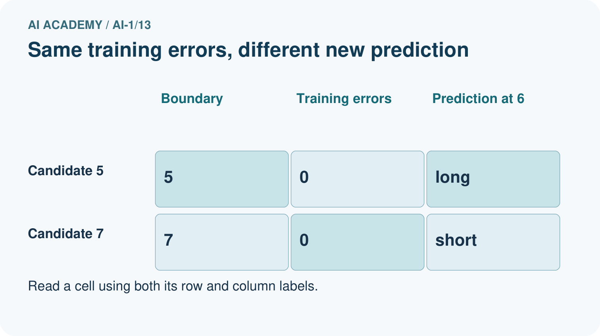
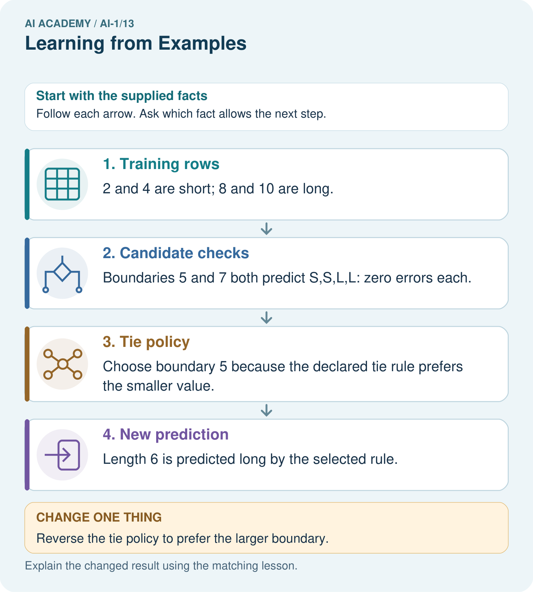

AI Academy · Level 1 · Grade 6 · Week 13 · Teacher guide
Learning from Examples
Learn to understand, design, build, test and explain AI systems responsibly.
Project: Helpful Classroom Sorter
Teacher guide · 1 of 8
Learning from Examples
Teach the learning cycle
Primary target: Fit a threshold by tracing predictions and counting disagreements for every candidate
| Session | Sequence and minutes | Resources |
|---|---|---|
| Session 1 · Understand · 45 min | 0–7: recall and prerequisite; 7–15: inspect the concrete case and predict; 15–30: teacher models the worked trace; 30–40: learners explain a step using the text and visual; 40–45: check the core idea. | Sections 1–6; record the brief recall in the workbook. |
| Session 2 · Practise · 45 min | 0–5: retrieve the procedure; 5–15: W2 completion practice; 15–23: explain and check with a partner; 23–30: each learner answers the misconception check; 30–40: targeted reteaching or a harder variation; 40–45: prepare the investigation. | Sections 7–10; use the matching workbook W2 and misconception check. |
| Session 3 · Investigate and transfer · 45 min | 0–5: retrieve the decision rule; 5–20: investigate or trace; 20–30: start the independent case; 30–38: connect the project; 38–43: act on feedback; 43–45: plan the return check. | Sections 9 and 11–14. Give extra time to finish the full task set; use Section 15 when the week includes a coding lab. |
This is a starting allocation of 135 minutes, not a validated duration. Preserve all named topics. Schedule extra time for connected examples, the full investigation, independent cases and project building. Repeated copies of a case share one recorded attempt; they are not new evidence.
Retrieval answer guidance
Debug the Cause
Without opening the old lesson, explain one key idea from Debug the Cause. Give an example and a mistake that the idea helps you avoid.
Look for: Compare expected and observed traces to locate the first difference
Reference example, not the only acceptable wording: Expected trace: 3, 5, 10, 9. First difference is the doubling checkpoint: 10 expected versus 8 observed. The later 8 minus 1 equals 7, so the observed subtraction is consistent with its input. Investigate the earlier step before claiming another fault.
If/Then Decisions
Without opening the old lesson, explain one key idea from If/Then Decisions. Give an example and a mistake that the idea helps you avoid.
Look for: Evaluate a condition using the current state and trace only the selected branch
Reference example, not the only acceptable wording: Start 2: after adding 2 score is 4; at least 6 is false; add 4 and report 8. Start 5: after adding 2 score is 7; at least 6 is true; subtract 3 and report 4. Each run starts fresh and executes only its selected branch.
Categories and Labels
Without opening the old lesson, explain one key idea from Categories and Labels. Give an example and a mistake that the idea helps you avoid.
Look for: Apply a category definition using explicit evidence and boundary rules
Reference example, not the only acceptable wording: In order: ready because both known fields pass; revise because 31 exceeds 30; review because the known day passes but the room is unknown; revise because the known day failure has priority over the unknown room. Equality at 30 is accepted.
Use the student module and workbook section with this exact week title. The worked case, independent question and answers below form one aligned lesson sequence.
What the learner must demonstrate
Training cards show lengths 2,3 labelled S and 7,8 labelled L. Two proposed rules are 'L at 5 or above' and 'L at 7 or above'. Both fit training. Choose one new labelled card length that would distinguish them and explain what remains unknown.
Concept to explain
Training examples influence how a model handles later inputs.
| Term | Meaning |
|---|---|
| training example | input paired with a target label |
| pattern | recurring relationship across examples |
| training | fitting behavior from examples |
| new input | case not used in fitting |
Prepare the class
Use the supplied scenario, student illustrations and blank paper. For numeric work, offer counters or a calculator after learners show the setup. Fictional records are supplied; personal data and paid accounts are unnecessary.
Allow 80 minutes: recall 8; explanation 12; worked demonstration 15; guided practice 20; independent assessment 15; project and reflection 10. Extend the lab into a second session when needed.
Preparation for the connected explanation
Extend Week 4 from a small candidate comparison to an explicit fitting algorithm, recorded tie handling and a changed fitting set. Use the same examples for every candidate and reset counts. The chart deliberately includes zero errors and a tie. Do not present the supplied classroom labels as natural truth or the selected threshold as a discovered universal law.
Readiness answer
Predictions are short, tall and tall. At 5 the at least rule includes equality; an accidental greater than rule would instead predict short.
Four tower cards showing height on the front and supplied label on the back
Candidate cards 3, 5, 6 and 7, a separate tally for each, and the smaller-threshold tie rule
An additional 5 cm short card, the independent distance examples and two conflicting 6 cm records
End goal for the pictorial case
By the end, I can compare candidate models, resolve a tie explicitly and separate fit from prediction.
This added worked case illustrates the week’s main idea. Retain all original and connected topics; schedule its practice within the teaching cycle.
Teacher guide · 2 of 8
Explain the mechanism
Explain the mechanism
Follow the information instead of imagining magic inside the machine.
INPUT labeled example cards
PROCESS adjust a decision pattern from recurring clues
OUTPUT prediction for a new card
CORE IDEA Training examples influence how a model handles later inputs.
UNDER THE HOOD Supervised learning uses labeled examples to fit a mapping from represented inputs to outputs. The model does not store a human rule automatically; its fitted behavior reflects correlations, coverage, labels, and optimization choices.
Draw a fresh example with all three stages:
Every step connects a claim to observable evidence.
CASE A learner shown mostly striped triangles may wrongly treat stripes as the important clue for the triangle label.
STEP 1 — OBSERVE labeled example cards
STEP 2 — TRACE adjust a decision pattern from recurring clues
STEP 3 — CONCLUDE prediction for a new card
MODEL REASONING Early examples may support several rules. New examples eliminate some possibilities and may change the decision boundary. Record each revision as evidence that training data shapes later behavior.
DO NOT OVERCLAIM Learning from examples is not the same as memorizing every example or understanding the concept like a person.
What new evidence could change this answer?
Concrete teaching case
Training examples label smooth leaves S and toothed leaves T. A new leaf is toothed.
Predict and state the evidence limit.
Exact explanation to model
Predict T from the demonstrated edge pattern. One success does not establish broad reliability; use fresh labelled tests including ambiguous cases.
Explain the added worked example
Four imaginary paper towers have heights 2, 4, 6 and 8 centimetres. Their supplied labels are short, short, tall and tall. These labels belong to this classroom task; they are not a universal definition of tall. We will fit a rule using height as its only input.
Every candidate predicts tall when height is at least its threshold and short otherwise. Compare thresholds 3, 5, 6 and 7 centimetres. The fitting procedure chooses the fewest disagreements with the four labels. If candidates tie, choose the smaller threshold. Write these choices before comparing results.
For each candidate, start its count at zero. For each example, predict with that candidate, compare with the supplied label, and add one only for a disagreement. After all four examples, record the count. Then move to the next candidate with a fresh count. This uses the conditions and repetition you have already traced.
Threshold 3 incorrectly calls the height 4 tower tall. Threshold 7 incorrectly calls the height 6 tower short. Thresholds 5 and 6 agree with all four supplied labels. Check each disagreement against the individual example instead of trusting a total without its trace.
The bar chart compares disagreement counts, so a shorter bar is better on this fitting set. Zero is a measured count here, not missing data. This chart says nothing yet about the error count on new towers.
Key terms
| Term | Meaning |
|---|---|
| Candidate model | One possible rule being compared during fitting |
| Fitting set | The examples used to choose or adjust a model |
| Disagreement count | The number of predictions that differ from their comparison labels |
| Tie rule | An explicit method for choosing between equally scoring candidates |
| Generalisation | How well a fitted model works on new cases beyond its fitting examples |
Model the reasoning aloud
Use the complete worked example below before asking learners to complete W2. Reveal a small part, invite a prediction, then explain the deciding step. These teacher notes contain solutions; do not reveal the independent case answer during modelling.
| 2 cm short | Short | Short |
|---|---|---|
| 4 cm short | Short | Short |
| 6 cm tall | Tall | Tall |
| 8 cm tall | Tall | Tall |
| 5 cm label not yet supplied | Tall | Short |
The first four rows are fitting examples. The final row asks what the two tied candidates predict at a height missing from that set. Our tie rule selects 5, so the selected model predicts tall at 5. The fitting examples alone do not tell us whether that new prediction matches the task label.
A tie rule makes the selection reproducible. It does not prove that the chosen threshold is the true boundary. Record that 6 tied with 5 and that they disagree at height 5. Hiding the tie would hide a real limitation of the available evidence.
| Thinking move | Teacher prompt |
|---|---|
| Plan | What is given? What is the question? Which procedure fits these facts? |
| Do | Point to each input and intermediate step in the worked trace. Name the rule that allows the next step. |
| Check | Does the output answer the question? Which assumption or limitation prevents a larger claim? |
Use the diagram and verbal explanation together. Ask learners to match a sentence to a specific visual step; do not assign learners fixed visual or auditory learning styles.
A pictorial worked case: Learning from Examples
A fictional classifier learns whether measured sticks are short or long.
The facts we will use
Training lengths 2,4,8,10 cm have labels short,short,long,long.
Candidate boundaries: long at least 5 or at least 7. Lowest errors wins; tie chooses smaller boundary.


Read the picture one step at a time
Why this result follows
There is no training stick between 4 and 8 to distinguish these candidates. The tie policy chooses one consistently; it is not additional evidence that its prediction at 6 is true. Label-free prediction applies the selected boundary, while evaluation would require an appropriate new reference label.
What this example does not establish
Zero training errors for both rules cannot determine the correct label of every unobserved stick.
Change one thing in the pictured case
Change: Reverse the tie policy to prefer the larger boundary.
Prediction: Boundary 7 is selected and predicts short at 6.
Reason: The training fit is unchanged; only the explicit choice between tied candidates changes.
Ask while showing the picture
Cover the result. Ask learners to name the inputs and predict the next step. Uncover one step, connect the icon to the actual procedure, and explain its evidence. Then change the supplied condition and compare. The picture is a representation; it does not document execution of a real AI model.
Teacher guide · 3 of 8
Demonstrate and guide practice
Demonstrate and guide practice
Board sequence
Write the given facts: Training examples label smooth leaves S and toothed leaves T. A new leaf is toothed.
Write the question to explain: Predict and state the evidence limit.
Reveal after predictions: Predict T from the demonstrated edge pattern. One success does not establish broad reliability; use fresh labelled tests including ambiguous cases.
Keep for an independent attempt: A learner sees three red apples and no green apples, then calls a green apple not an apple. What missing evidence could help? How would you check improvement?
Classroom dialogue
Ask: Which facts are given, and which would we have to assume? Learners mark relevant details before discussing answers.
Say: Predict first. Show the rule, information path or calculation that would produce the result. A correct guess is not yet an explanation.
Reveal reasoning one step at a time. Explain why a tempting alternative fails. Write units and denominators for arithmetic, trace conditions for decisions, and identify supporting sources for claims.
In pairs, one learner solves while the other checks evidence; exchange roles. Remove the worked answer before independent assessment.
Model these guided questions
At height 5, threshold 5 predicts tall and adds one disagreement; its total is 1. Threshold 6 predicts short and adds none; its total remains 0. Select 6 between these candidates. The new label affected selection and is therefore fitting evidence. Exit: the threshold agrees with these four supplied labels under this procedure, but future performance remains unestablished. Check predictions on appropriate new labelled examples kept separate from selection and inspect their coverage.
Case-specific teaching sequence
| Stage | Teacher action |
|---|---|
| Session 1 start 0 to 7 minutes | Retrieve at least and its equality case. Ask what information is available when predicting a new label. |
| 7 to 20 minutes | Model threshold 3 with a fresh zero tally. Predict each example before comparing its label. Record the single disagreement at height 4. |
| 20 to 33 minutes | Complete all four candidates. Interpret the shared-scale chart and emphasise that zero-length bars represent zero disagreements. |
| 33 to 45 minutes | Complete W1 and W2 in pairs. Apply the tie rule but preserve the record of both tied candidates and their prediction difference at height 5. |
| Session 2 start 0 to 8 minutes | Retrieve the selected threshold and ask whether the tie rule proves its missing boundary label. |
| 8 to 23 minutes | Use the guided task and W3 to add height 5 short. Recompute on all five examples and explicitly reclassify the added evidence as fitting data. |
| 23 to 38 minutes | Collect W4 independently. Require all prediction lists and counts, then cover the new label while students predict at distance 2. |
| 38 to 45 minutes | Discuss W5 and the exit. Separate record investigation from changing labels to flatter the model. Preview constructing a complete classifier. |
Reduce help deliberately
Completion task: Thresholds 5 and 6 both have zero disagreements on the W1 fitting set. The tie rule chooses the smaller threshold. Which is selected? Give a whole-number height where the two candidates disagree and both predictions. Explain what the tie rule does not prove.
Teacher check: Select 5. At height 5 cm, threshold 5 predicts tall and threshold 6 predicts short. Choosing the smaller threshold makes the procedure definite; it does not prove which prediction matches a label not supplied by the fitting set.
Start by identifying the given inputs together. Leave the intermediate steps blank. If needed, model one step, then withdraw that help on the next step. Move to a full trace only when the partial trace is understood. For partners, alternate explainer and checker; collect a response from every learner before discussion.
Individual reasoning check
Use the worked case for Fitting a pattern from examples. Proposed explanation: “The lowest error count is added across candidates”. Decide whether this explanation is supported. Point to the step or supplied fact that decides; explain your repair if needed.
Expected correction: Reset to zero for each candidate so all totals describe the same examples under one rule.
Collect explanations, not only yes/no votes. If a misunderstanding is common, re-model the relevant step for the class. If it affects a few learners, give a short targeted group explanation while others solve a more demanding variation.
Pictorial practice question
Which new measured length would reveal disagreement between the candidates?
Reasoned teacher answer
Length 6 does: boundary 5 predicts long and boundary 7 predicts short. A checked label would then provide new evidence.
Changed-case reasoning: Boundary 7 is selected and predicts short at 6. The training fit is unchanged; only the explicit choice between tied candidates changes.
Collect each learner’s explanation before discussion. Use the first missing connection between input, deciding step and result to choose support. This question is worked-case practice, not fresh mastery evidence.
Teacher guide · 4 of 8
Run the weekly evidence lab
Run the weekly evidence lab
Predict first, test honestly, and explain what the evidence means.
State your prediction before the result is known.
Complete the task: Act as a model trained on shape cards; record rule changes.
Keep a normal case and an edge case clearly separated.
Record what happened—even when it does not match your prediction.
Explain the result, one limitation, and the next useful test.
INDEPENDENCE After support is removed, repeat the proof with a fresh case.
Make the lab runnable
Use the concrete case as the shared normal case and the independent question as a second case. Each pair creates a boundary or missing-information case and predicts its result before testing. Keep the expected result separate from an observed mistake.
| Record | What to capture |
|---|---|
| Input or evidence | Exact data, instruction or claim |
| Expected result | Answer or safe fallback declared before the run |
| Observed result | Actual result, including errors |
| Explanation | Rule, calculation or evidence explaining the outcome |
| Next test | One justified change and a new prediction |
Diagnose and reteach
CLAIM TO REPAIR Remembering teaching examples proves learning works everywhere.
For guessing, return to given facts and request a trace. For vocabulary without application, use one example and one non-example. For arithmetic errors, check the setup before the calculation. Finish with a different uncoached case before recording mastery.
Address these additional misconceptions
The lowest error count is added across candidates: Reset to zero for each candidate so all totals describe the same examples under one rule.
A tie rule proves the selected boundary is correct: Compare tied thresholds at height 5, which was absent from the original fitting set.
Zero fitting errors guarantee future correctness: Separate the evidence used to choose the rule from new labelled cases used to evaluate it.
Disagreeing labels should be changed to match the model: Inspect original measurements, units, omitted information and label definitions; model agreement is not sufficient grounds for editing a record.
Match the support to the first error
| What the response shows | Next teaching action |
|---|---|
| Missing or misread facts | Read the case aloud, mark supplied versus unknown facts, and let the learner restate it. |
| Wrong procedure | Return to the deciding step in the worked case. Contrast it with the proposed incorrect explanation. |
| Arithmetic or implementation error | Trace intermediate values or lines; preserve the first mismatch and retry that step. |
| Correct result without a reason | Ask for a trace and a changed case before marking independent understanding. |
| An unsupported wider claim | Ask which supplied evidence supports the claim and which further observation would be needed. |
Offer an oral explanation, drawing, enlarged visual or fewer examples when that removes a reading/writing barrier. Keep the same reasoning goal. Stretch secure learners by changing a boundary or assumption and asking them to defend the effect, not simply by assigning more of the same questions.
Teacher guide · 5 of 8
Assess and explain the answers
Assess and explain the answers
Worked case answer
Predict T from the demonstrated edge pattern. One success does not establish broad reliability; use fresh labelled tests including ambiguous cases.
Independent question
A learner sees three red apples and no green apples, then calls a green apple not an apple. What missing evidence could help? How would you check improvement?
Expected independent answer
Add varied labelled apple examples, including green apples. Check with separate new examples not used to teach the learner. More examples help only if they provide useful, correct evidence.
What counts as evidence
| Criterion | 0 points | 1 point | 2 points |
|---|---|---|---|
| Result | Incorrect or absent | Partly correct | Correct with necessary conditions |
| Reasoning | No supporting trace | Some steps | Clear mechanism, calculation or source support |
| Limit | Overclaims certainty | Vague limitation | Relevant uncertainty or missing fact |
| Transfer | Copies without adapting | Adapts with prompts | Solves a changed case independently |
Use 6/8 as a classroom checkpoint, with 2 required for both Result and Reasoning. This is a proposed teaching rule, not a validated certification threshold. Do not count a coached answer as independent mastery; correct unsafe or unsupported claims regardless of total.
Feedback
Ask the learner to find the evidence that challenges this claim: “Remembering teaching examples proves learning works everywhere.” Keep the first attempt and an uncoached retry separate.
Original transfer answer
A card of length 5 or 6 receives L under the first rule and S under the second. Its independently established label helps compare the rules. Training fit alone does not determine a unique rule; one extra label still does not settle all future cases.
Explanations for the additional workbook examples
W1 Count each candidate from zero
Heights 2, 4, 6 and 8 cm have labels short, short, tall and tall. Predict all four labels under threshold 3, then under threshold 7, using tall when height is at least the threshold. List the disagreeing examples and separate totals.
Threshold 3 predicts short, tall, tall, tall, disagreeing only at 4 cm: count 1. Threshold 7 predicts short, short, short, tall, disagreeing only at 6 cm: count 1. Reset the tally for each candidate.
W2 Explain a tied fit
Thresholds 5 and 6 both have zero disagreements on the W1 fitting set. The tie rule chooses the smaller threshold. Which is selected? Give a whole-number height where the two candidates disagree and both predictions. Explain what the tie rule does not prove.
Select 5. At height 5 cm, threshold 5 predicts tall and threshold 6 predicts short. Choosing the smaller threshold makes the procedure definite; it does not prove which prediction matches a label not supplied by the fitting set.
W3 Update with an added example
Add height 5 cm labelled short to the four fitting examples. Recompute the disagreement totals for thresholds 3, 5, 6 and 7. Select the candidate with the fewest disagreements, keeping the smaller-threshold tie rule. Explain why the new label is part of fitting.
Totals are 2, 1, 0 and 1 respectively. Threshold 3 now disagrees at 4 and 5; threshold 5 at 5; threshold 6 nowhere; threshold 7 at 6. Select 6. The new label influenced selection, so it is fitting evidence.
W4 Fit a new distance task
Imaginary map markers have distances 1, 3, 5 and 7 units, with supplied labels near, far, far and far. Compare candidates that predict far when distance is at least 2, 4 or 6 units. List every prediction and error count, select the lowest-error candidate, then predict at distance 2 before any comparison label is supplied. Limit your conclusion.
Threshold 2 predicts near, far, far, far with 0 errors. Threshold 4 predicts near, near, far, far with 1 error at 3. Threshold 6 predicts near, near, near, far with 2 errors at 3 and 5. Select 2 and predict far at exactly 2. This fits the four labels among these candidates; it does not establish the unknown label at 2 or all future distances.
W5 Keep conflicting records visible
Two fitting records both have height 6 cm. One is labelled short and the other tall. A learner says a clever height-only rule can agree with both on every run. Explain the problem for a deterministic rule and name two checks to make before changing either record.
The same input must receive the same prediction from this deterministic height-only rule, so at least one of the two labels disagrees. Check the original measurements and units, and check whether both labels used the same task policy; also investigate an omitted relevant feature. Do not edit a label merely to improve the score.
Assess independent transfer
Selected case: Imaginary map markers have distances 1, 3, 5 and 7 units, with supplied labels near, far, far and far. Compare candidates that predict far when distance is at least 2, 4 or 6 units. List every prediction and error count, select the lowest-error candidate, then predict at distance 2 before any comparison label is supplied. Limit your conclusion.
Selected case answer
Threshold 2 predicts near, far, far, far with 0 errors. Threshold 4 predicts near, near, far, far with 1 error at 3. Threshold 6 predicts near, near, near, far with 2 errors at 3 and 5. Select 2 and predict far at exactly 2. This fits the four labels among these candidates; it does not establish the unknown label at 2 or all future distances.
| Dimension | Evidence required |
|---|---|
| Explanation | Names the applicable idea or procedure and ties it to the supplied facts. |
| Trace and result | Preserves the given inputs and shows the relevant intermediate steps; distinguishes a prediction from an observed execution. |
| Limits | States the assumptions, missing evidence or conditions under which the result would change. |
Record each dimension as not yet, with support, or independent. Accept a valid alternative procedure with a defensible trace. Do not penalise an honestly recorded model failure if the learner correctly explains its evidence and limits.
Feedback that the learner uses
Name the earliest unsupported step and give one action to repair it. Have the learner make that repair now and explain why. Then assess the relevant skill on a fresh, fully specified case. Confirm it was not previously practised with feedback; solve and check the new case before assigning it. A follow-up design prompt is a starting brief, not automatically an equivalent test.
Teacher guide · 6 of 8
Connect and extend learning
Connect and extend learning
Helpful Classroom Sorter
Create the first small labeled example set for the sorter and explain which visual differences it covers.
Keep the decision, input, result, explanation and remaining limitation in the project evidence record. Retrieve this record next week rather than restarting the project.
Support and stretch
Use physical cards, spoken explanations and a three-stage drawing. Read aloud without giving the answer. Stretch: compare two mechanisms with the same visible output and explain what evidence distinguishes them.
Exit reflection
Ask for one decision the learner can now justify and one situation requiring more evidence or human review. Confidence ratings are separate from correct independent performance.
Bridge to the next week
Next: Week 14: Build a Human Classifier. Retrieve today’s evidence and identify what carries forward and what is new.
Support and fresh reassessment
Use counters for disagreements and a number line with a closed threshold dot. Let students read labels aloud after committing predictions. Extension: identify all positive whole-number thresholds with zero disagreements on the original tower set and explain why the available labels do not select uniquely between them.
W4 is secure when the learner lists the three prediction sequences, obtains counts 0, 1, 2, selects 2, includes equality in the new prediction and limits the claim. After support, retry values 2, 4, 6, 8 labelled near, near, far, far with thresholds 4 and 6: counts 1 and 0, select 6. Ask about an unseen distance 5 to check that prediction is not confused with verified correctness.
Week 14 constructs a classifier as a complete procedure with defined inputs, a selected model and explicit handling of invalid or missing records.
Plan the delayed return
Suggested return points in this level: ai-1/14, ai-1/16, ai-1/19. Use actual classroom dates, adjusting for holidays and gaps. One, three and six teaching weeks are scheduling choices, not a claimed optimal spacing.
At a delayed check, ask for the idea from memory and a changed application. Compare with the earlier independent response and record support used. For a new level, revisit the previous capstone before checking the new prerequisites.
| Record | Teacher evidence |
|---|---|
| Learner code and date | |
| Concept and case used; prior exposure | |
| Explanation / trace / limits | |
| Support and first repair | |
| Changed case and delayed outcome | |
| Next teaching action |
Use the evidence to choose reteaching or the next step. A completed page, confidence rating or attractive project does not by itself demonstrate understanding.
Project evidence from this case
Save candidate definitions, training errors and tie policy with any sorter model version.
Teacher guide · 7 of 8
Prepare, teach and assess
Teaching target: Fit a threshold by tracing predictions and counting disagreements for every candidate
Prepare the labelled worked-case picture, the matching workbook, fictional input cards and a place for individual responses. No paid AI account is required for the paper reasoning activities.
| Session | Plan | Resources |
|---|---|---|
| Session 1 · Understand · 45 min | 0–7: recall and prerequisite; 7–15: inspect the concrete case and predict; 15–30: teacher models the worked trace; 30–40: learners explain a step using the text and visual; 40–45: check the core idea. | Sections 1–6; record the brief recall in the workbook. |
| Session 2 · Practise · 45 min | 0–5: retrieve the procedure; 5–15: W2 completion practice; 15–23: explain and check with a partner; 23–30: each learner answers the misconception check; 30–40: targeted reteaching or a harder variation; 40–45: prepare the investigation. | Sections 7–10; use the matching workbook W2 and misconception check. |
| Session 3 · Investigate and transfer · 45 min | 0–5: retrieve the decision rule; 5–20: investigate or trace; 20–30: start the independent case; 30–38: connect the project; 38–43: act on feedback; 43–45: plan the return check. | Sections 9 and 11–14. Give extra time to finish the full task set; use Section 15 when the week includes a coding lab. |
Before class, solve the supported practice: Thresholds 5 and 6 both have zero disagreements on the W1 fitting set. The tie rule chooses the smaller threshold. Which is selected? Give a whole-number height where the two candidates disagree and both predictions. Explain what the tie rule does not prove.
Reasoned practice answer: Select 5. At height 5 cm, threshold 5 predicts tall and threshold 6 predicts short. Choosing the smaller threshold makes the procedure definite; it does not prove which prediction matches a label not supplied by the fitting set.
Check every learner before discussion: Use the worked case for Fitting a pattern from examples. Proposed explanation: “The lowest error count is added across candidates”. Decide whether this explanation is supported. Point to the step or supplied fact that decides; explain your repair if needed.
Misconception repair: Reset to zero for each candidate so all totals describe the same examples under one rule.
Support: read the exact case aloud, enlarge the labelled picture, supply input cards and model only the first deciding step. Accept a spoken explanation or drawing; retain the reasoning goal.
Extension: Reverse the tie policy to prefer the larger boundary. Require a prediction and a reason before comparing. Expected result: Boundary 7 is selected and predicts short at 6. Reason: The training fit is unchanged; only the explicit choice between tied candidates changes.
Independent assessment: withhold the reserved answer until the learner has attempted the new case. Record support separately from correctness.
| Criterion | Not yet | With support | Independent |
|---|---|---|---|
| Explanation | Names an answer without a deciding fact | Uses a hint to link fact and decision | Explains the deciding fact in own words |
| Trace or test | Cannot connect input and result | Completes steps with prompts | Traces or tests a changed case accurately |
| Limits and revision | Claims more than evidence supports | Names a limit after a prompt | States a defensible limit and useful next test |
Project checkpoint: Test changed cases. Keep normal, boundary and failure cases; compare expected and observed results.
Use the weekly teacher answer for topic-specific reasoning. A saved progress tick is an activity record; judge mastery from the learner’s explanation and evidence.
Teacher guide · 8 of 8
Use feedback, labs and repair paths
Use the two formative questions as supported practice, not as independent mastery scores. Discuss the deciding evidence rather than accepting a guessed selection.
The feedback comes from the reviewed public worked case. Do not reveal the separately reserved independent teacher answer until the learner has attempted that case.
Ask students to predict before running code. Preserve errors and actual outputs; collect a changed test and an explanation. The branch-boundary and indexing lessons deliberately include failure cases.
Use the earlier worked-explanation links to address a specific missing building block, then return to the current question. Adapt this suggestion after observing the learner; it is not an automatic diagnosis.
Collect the completed-work portfolio as evidence. Record support separately from correctness, and assess explanation, trace/test and limitations. Progress ticks and quiz selections alone do not establish mastery.